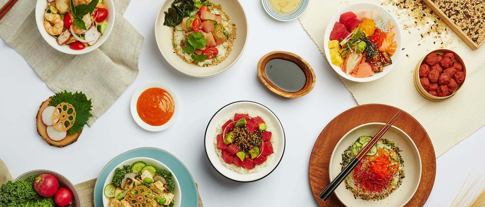

( ko-meh wa-za )
Respect the fish! Kome Waza strives to provide you with a
delicate balance between time-honored Japanese sushi
traditions and exciting new Asian-inspired flavors in a
refreshing new take on the East Coast poke trend.
Seared tuna over 8-grain brown rice with mixed greens, hijiki quinoa, white soy avocado
cream sauce, sesame seeds, garlic chips, kizami nori, tobiko, and salsa
Tuna and tofu over 8 - grain brown rice with mixed greens, hijiki quinoa, edamame,
silken shiso tofu sauce, avocado, and kizami nori
Hamachi and scallops over mixed greens with mango, hijiki quinoa, edamame, tomato,
mango anchovy sauce, masago, sesame seeds, and radish sprouts
Salmon over sushi rice with mixed greens, tomato, sweet onion, cucumber, edamame,
pomegranate citrus spice sauce, ogo seaweed, sesame seeds, radish sprouts, and tobiko
Octopus, scallops, and shrimp over kale cold noodles with mixed greens, hijiki quinoa,
tomato, wasabi cashew peanut sauce, ogo seaweed, rice pop, and radish sprouts